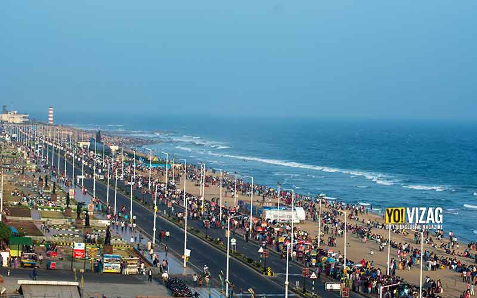
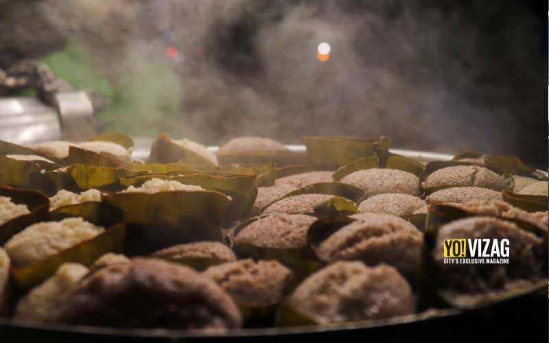
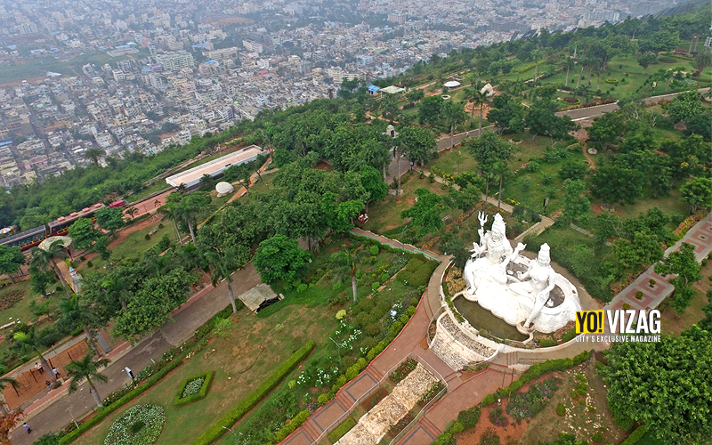

OUR VIZAG Home Contact About Us
A city that is charmingly sandwiched between hills and water, Vizag has struck a chord with nature lovers since times immemorial.The city is filled with several captivating tourist spots that attract enthusiasts from different corners of the world. Be it the heritage sites,or nature escapades or even the man-made wonders, the port city has it all. Here are a few things to do in Vizag when you visit the city. #1 One Town tour Town Hall Vizag’s heritage is a treasure chest of wonderful stories with One Town area being the focal point in the late 1800s. This is where stories from the past can come alive when heard on an evening of walk in what was once known as Soldierpeta. Places such as Town Hall, St. Aloysius Anglo Indian High School, European Cemetery, and St. John’s Church, among others, reflect the city’s proud heritage. You can also get to explore the magnificence of the local markets by shopping in the area. #2 Going along the beach stretch  visakhapatnam police, tourist spots, visakhapatnam Beach Road in Visakhapatnam The Vizag beach rejuvenates worn-out souls like none other. From indulging in the fresh salty breeze to soaking into the city’s tranquil charm whilerelishing your favourite ice cream, there are myriad things to do along the beach stretch in Vizag. #3 Gorging over the local food  Vasenpoli Delicious seafood, spicy Andhra favourites, quirky street flavours, and the quintessential South Indian tiffins are a few of the many specialties that make it to the list of gastronomical delights in Vizag. #4 Exploring the prized possessions of the city  Kailasagiri Fittingly called as the ‘Jewel of the East Coast’, Vizag has long held us captive with its alluring beauty. Among the many things to do in Vizag,paying a visit to the prized possessions of the city, such as Kursura Submarine, TU-142 Aircraft Museum, Tenneti Park, Kambalakonda, the Buddhist circuit, etc come highly recommended. #5 Trying out the adventure activities Scuba Diving Vizag has recently grown famous for the adventure activities on offer. Activities like Scuba Diving, Kayaking, Jet Skiing, etc, keep the tourists engaged and are a must-try if you’re an adventure junkie.